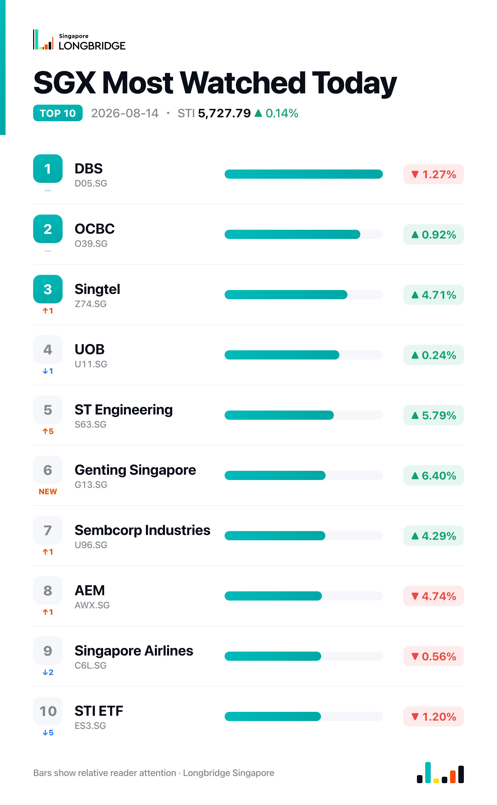

STI Adds 0.14% to 5,727.79 as Earnings Lift Genting Singapore, ST Engineering, Singtel; UOL Extends Slide
The Straits Times Index closed at 5,727.79 on Friday, up 7.74 points, or 0.14%, after swinging between an intraday low of 5,668.02 and a high of 5,741.69. Gains were more broadly spread than earlier in the week: 15 of the benchmark's 30 constituents advanced against 10 decliners and five unchanged, with a fresh batch of earnings releases lifting names across gaming, defence engineering, telecoms and property, even as OCBC and UOB edged higher while DBS slipped.
First-half corporate earnings season remained the dominant driver. Genting Singapore, ST Engineering and Singtel all posted quarterly results that outweighed mixed headline profit figures, each pushing its stock up more than 4%. The gains were sector-diverse rather than concentrated in one or two heavyweights, a shift from Thursday's session, when just six constituents advanced and the index's support came almost entirely from City Developments. Among the three local banks, OCBC (up 0.92%) and UOB (up 0.24%) edged higher while DBS slipped 1.27%, keeping the banks' recent pattern of internal divergence intact. Property developer UOL extended its decline for a second straight session, falling 2.83% with no fresh company news to offset Thursday's 6.1% drop.
Session Movers
Genting Singapore (G13.SG, +6.4%) rose despite a 33.5% year-on-year drop in first-half net profit to S$156.1 million, which the company attributed to higher depreciation, lower interest income and ongoing asset-refresh works at Resorts World Sentosa. Revenue held nearly steady, down just 0.9% to S$1.2 billion, supported by a 6% rise in non-gaming revenue. The stock trades at 19.33 times earnings, cheaper than 59% of the past five years, with a consensus Hold rating and a S$0.72 target implying about 8% upside.
ST Engineering (S63.SG, +5.79%) rose after reporting first-half net profit up 27% to S$512 million on revenue that climbed 11% to S$6.57 billion, with an order book of S$35.7 billion as of end-June that includes a new UK defence contract. Its price-earnings ratio of 56.49 times sits near a five-year high, cheaper than only about 9% of the past five years, though still below the defence and engineering sector's median of 70.23 times; the consensus rating remains Buy with an S$11.54 target.
Singtel (Z74.SG, +4.71%) advanced after posting first-quarter underlying net profit up 21% to S$831 million, with OpCo EBIT rising 10% to S$462 million on revenue up 5% to S$3.56 billion, both ahead of guidance, driven by Airtel, AIS, NCS, Optus and Digital InfraCo. Reported net profit fell 72% to S$818 million only because the year-earlier quarter included one-off gains from stake sales in Airtel and Intouch-Gulf. The consensus rating stands at Buy with a S$5.31 target, about 19% above the current price.
UOL Group (U14.SG, -2.83%) extended Thursday's 6.1% slide with a second straight decline, even as DBS Group Research and CGS International both reiterated Buy ratings on the stock, at S$13.00 and S$12.83 targets respectively. Neither reaffirmation stemmed the drop, which came with no fresh company news.

One point worth noting
Friday's advance was unusually broad for the week: 15 of 30 constituents rose against 10 decliners, with gains coming from four different sectors — gaming, defence engineering, telecoms and property — each tied to its own earnings release rather than a single catalyst. That is close to the opposite of Thursday, when just six stocks advanced yet the index barely moved, or of August 6, when a handful of heavyweights drove a sharp index gain despite far more decliners than advancers. It suggests this earnings season is starting to lift the market more broadly, rather than through isolated pockets of strength.
This recap is for informational purposes only and does not constitute investment advice.